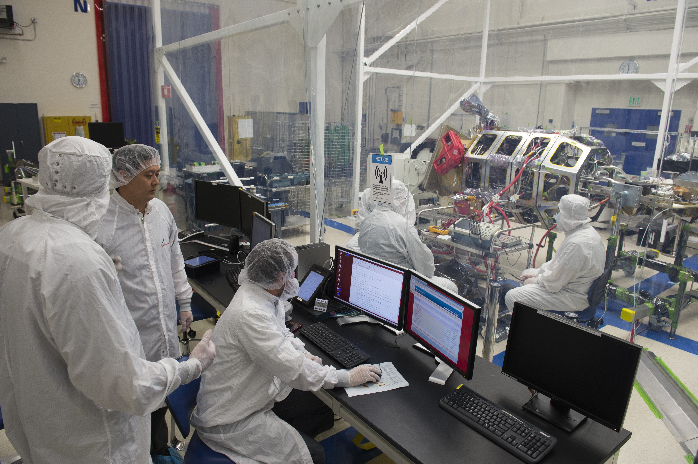
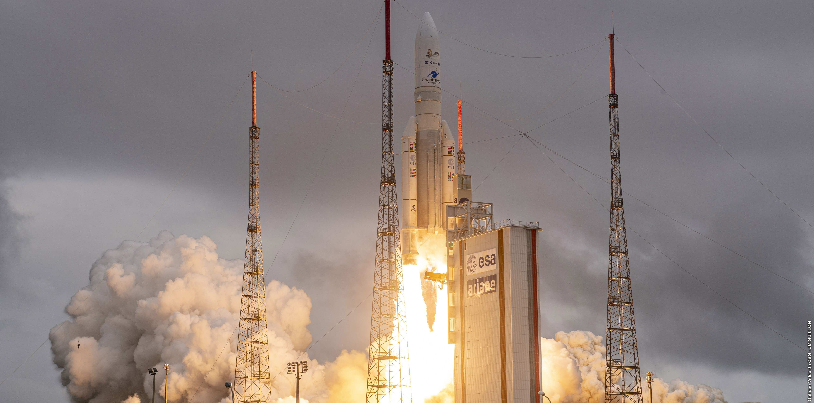
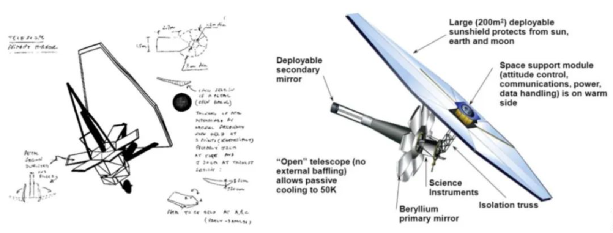

Here you can see a chronological account of its origins and the journey leading up to the present day:
In the 1990s, discussions arose about the need for a successor to the Hubble Space Telescope (HST) that could observe the universe with improved resolution and sensitivity. Various design concepts were explored, and in 1996, NASA approved the Next Generation Space Telescope (NGST) project. The NGST was envisioned to study the first galaxies that formed after the Big Bang, the formation of stars and planetary systems, and the origins of life.
After years of research and design studies, the NGST project was renamed the James Webb Space Telescope in 2002, in honor of James E. Webb, the former NASA administrator. The renamed telescope was intended to build upon the success of the Hubble Space Telescope and push the boundaries of our understanding of the cosmos.
The construction of the JWST was a complex and collaborative effort involving NASA, the European Space Agency (ESA), and the Canadian Space Agency (CSA). Each agency contributed critical components to the telescope. NASA was responsible for the overall project management, the main mirror, and the sunshield; ESA provided the Ariane 5 rocket for launch and the NIRSpec and MIRI scientific instruments; CSA contributed the Fine Guidance Sensor/Near InfraRed Imager and Slitless Spectrograph (FGS/NIRISS).

The development of the JWST faced several technological challenges and encountered delays along the way. The telescope's primary mirror, a segmented structure comprising 18 hexagonal mirror segments, presented significant engineering and manufacturing hurdles. Additionally, testing and integration processes took longer than anticipated, leading to schedule slips and cost overruns.
To ensure the JWST's readiness for space, extensive testing was conducted to simulate the harsh conditions it would face during launch and its mission in space. These tests included vibration and acoustic testing, thermal vacuum testing, and more. In early 2021, the final testing phase concluded, and the telescope was prepared for launch.
On December 25, 2021, the James Webb Space Telescope was successfully launched into space aboard an Ariane 5 rocket from the Guiana Space Centre in French Guiana. The launch marked a major milestone in space exploration, as the JWST is one of the most complex and powerful observatories ever built.

Following its launch, the JWST entered a critical phase known as commissioning, during which the telescope's systems were checked, and its instruments were calibrated to ensure optimal performance. Once commissioning was complete, science operations began, and the JWST embarked on its mission to explore the universe's distant past, study exoplanets, investigate the formation of stars and galaxies, and much more.